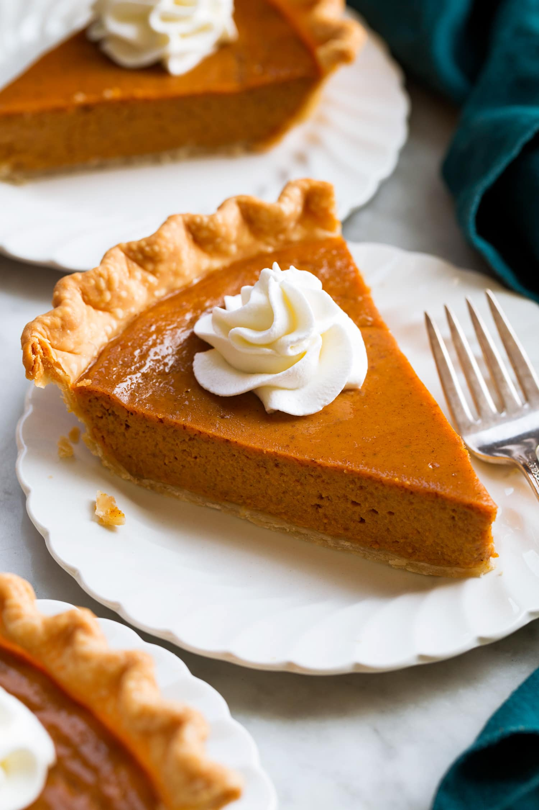

Pumpkin Pie

Description:
A classic pumpkin pie with a creamy filling and a hint of spices. Perfect for the fall season!
Ingredients:
- 1 pre-made pie crust
- 1 can (15 oz) pumpkin puree
- ¾ cup granulated sugar
- 1 teaspoon ground cinnamon
- ½ teaspoon ground ginger
- ¼ teaspoon ground cloves
- ½ teaspoon salt
- 3 large eggs
- 1 can (12 oz) evaporated milk
Instructions:
- Preheat Oven: Preheat your oven to 425°F (220°C).
- Prepare Filling: In a large bowl, combine pumpkin puree, sugar, cinnamon, ginger, cloves, and salt. Beat in the eggs, then stir in evaporated milk.
- Prepare Pie Crust: Place the pie crust in a 9-inch pie dish and trim any excess dough. Crimp the edges if desired.
- Fill Crust: Pour the pumpkin filling into the prepared crust.
- Bake: Bake in the preheated oven for 15 minutes. Reduce temperature to 350°F (175°C) and continue baking for 35-40 minutes, or until a knife inserted into the center comes out clean.
- Cool: Let the pie cool completely on a wire rack before serving.